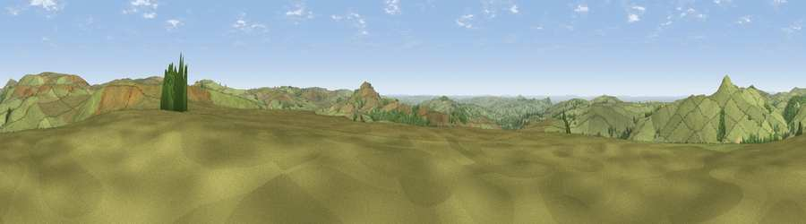

Viewpoint near Allgreave
#10846 in England · top 13% of its area beats it · near AllgreaveThe view, rendered

A 360° render of this exact spot computed from the terrain model, tree cover and land cover — summer colours, afternoon light, calibrated against photographs of famous viewpoints. Real trees, hedges and buildings will differ in detail.
The panorama
Grey silhouette: terrain skyline in each direction (720 bearings, Earth curvature and refraction included). Dashed green: skyline with trees (+15 m) and buildings (+8 m) as obstacles. Blue strip: how far the ground is visible on each bearing.
Where the view opens
Wedge length = distance to the farthest visible ground on that bearing (vegetation-aware). Rings at 10, 25 and 50 km.
What fills the view
91% grassland · 8% woodland ·
Angular shares of the visible panorama (visual magnitude), not map area. Landscape diversity 0.15 (0–1 Shannon).
Key numbers
More beautiful places nearby
The staircase of upgrades: each row has a higher view potential than everything closer. Driving times are estimates from straight-line distance, calibrated against real road routing — check an actual route before setting out.
| Place | Direction | Drive | Score |
|---|---|---|---|
| Viewpoint near Allgreave | NW · 2 km | ~6 min | 72.0 |
| Viewpoint near Meerbrook | SSE · 4 km | ~9 min | 73.5 |
| Viewpoint near Timbersbrook | WSW · 10 km | ~19 min | 74.4 |
| Viewpoint near Mow Cop | SW · 16 km | ~29 min | 78.9 |
| Viewpoint near Mow Cop | SW · 17 km | ~29 min | 80.2 |
| Viewpoint near Harthill | WSW · 49 km | ~70 min | 80.5 |
| White Brow | NW · 55 km | ~77 min | 82.9 |
| Viewpoint near Little Wenlock | SSW · 69 km | ~92 min | 84.2 |
53.20614, -2.01680 · source: screening · position refined by local search. Computed location — check access rights before visiting.